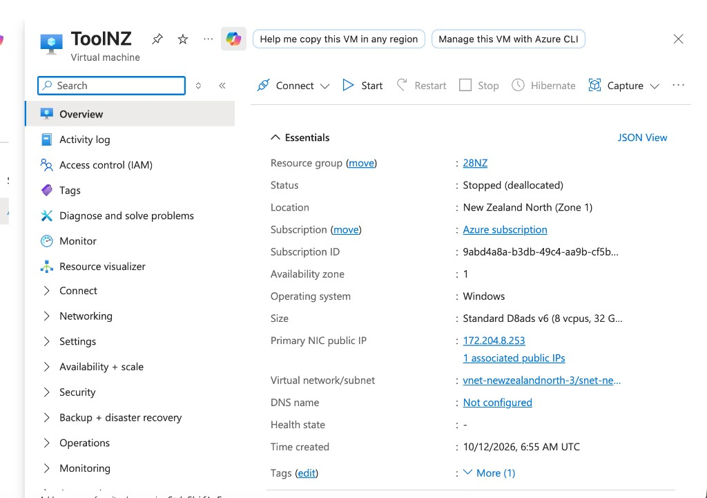

Tài khoản Microsoft
Email dùng để đăng nhập Outlook, Hotmail hoặc tài khoản tạo mới cũng được. Vào portal.azure.com.
Làm lần lượt, không cần biết trước
Máy này gọi là VPS: một máy tính để trên đám mây, bạn mở màn hình của nó qua mạng. Ảnh trong trang là một máy thật tên ToolNZ. Bạn tạo máy của mình, tên và địa chỉ IP sẽ khác. Đừng kết nối vào máy trong ảnh.
Bước 0
Email dùng để đăng nhập Outlook, Hotmail hoặc tài khoản tạo mới cũng được. Vào portal.azure.com.
Azure hỏi thẻ để mở tài khoản. Máy chỉ tốn tiền khi đang bật. Tắt đúng cách thì ngừng tính tiền CPU.
Tự đặt một mật khẩu dài, có chữ hoa, chữ thường, số và một ký tự như ! hoặc @. Ghi vào nơi chỉ mình bạn xem. Azure không gửi lại mật khẩu này.
Bước 1
Mỗi mục dưới đây là một ô trên form tạo máy. Điền xong mới bấm tạo.
Đăng nhập portal.azure.com. Bấm ô Search phía trên, gõ Virtual machines, rồi mở dịch vụ đó. Bấm Create, chọn Azure virtual machine.
Subscription: chọn gói bạn vừa mở. Resource group: bấm Create new. Trong ảnh, nhóm tên 28NZ. Virtual machine name: trong ảnh là ToolNZ. Bạn có thể đặt tên khác, miễn không có dấu cách.
Region: New Zealand North. Đây là Auckland, sát nơi trang cần mở. Availability options: Availability zone. Availability zone: 1, giống dòng Location trong ảnh: New Zealand North (Zone 1).
Image: một bản Windows có màn hình desktop, ví dụ Windows 11 Pro. Size: bấm See all sizes. Ảnh ví dụ đang là Standard D8ads v6, 8 vCPU và 32 GB RAM. Bảng giá dùng mức tham khảo nhỏ hơn, 4 vCPU và 8 GB (D4als_v6), khoảng 10.000đ mỗi giờ. Chọn mức bạn chịu được. Hướng dẫn này đúng với cả hai mức.
Username: đừng dùng các tên admin, administrator, root. Password: mật khẩu bạn đã chuẩn bị. Đây là mật khẩu để mở màn hình máy, khác với mật khẩu đăng nhập Azure.
Public inbound ports: Allow selected ports. Select inbound ports: tick RDP (3389). Không tick cổng này thì laptop không mở được màn hình máy.
Các tab Disks và Networking để mặc định nếu bạn chưa cần đổi. Bấm Review + create. Ô nào đỏ thì quay lại sửa ô đó. Khi không còn lỗi, bấm Create. Đợi đến khi thấy deployment hoàn tất, rồi bấm Go to resource.
Bước 2
Sau khi vào máy, bạn đứng ở mục Overview. Ảnh dưới là máy ToolNZ đang tắt. Máy của bạn trông giống vậy, khác tên và khác IP.

| Chỗ trên màn hình | Nghĩa là gì |
|---|---|
| Overview | Trang chính. Ngày thường chỉ cần đứng ở đây. |
| Connect | Lấy đường vào màn hình máy từ laptop của bạn. |
| Start | Bật máy. Bấm nút này trước khi Connect. |
| Restart | Khởi động lại. Máy vẫn đang chạy, vẫn tính tiền. |
| Stop | Tắt hẳn. Khi Status thành Stopped (deallocated) thì ngừng tính tiền CPU. |
| Hibernate | Ngủ đông. Không dùng nút này để tiết kiệm tiền. |
| Resource group | Túi chứa máy, ổ đĩa và IP. Trong ảnh là 28NZ. Xoá cả túi này khi không dùng nữa. |
| Status | Running là đang bật. Stopped (deallocated) là đang tắt đúng cách. |
| Location | Phải là New Zealand North. Zone 1 là khu trong vùng đó. |
| Operating system | Windows, để có màn hình desktop. |
| Size | Độ mạnh của máy. Ảnh là D8ads v6. Máy bạn tạo có thể nhỏ hơn. |
| Primary NIC public IP | Địa chỉ để laptop tìm thấy máy. Chỉ dùng IP của máy bạn, không dùng IP trong ảnh. |
Cột trái còn Activity log, Networking, Monitoring. Bỏ qua khi mới bắt đầu. Việc hằng ngày là Start, Connect và Stop.
Bước 3
Đợi Status đổi thành Running. Lần đầu có thể mất một hoặc hai phút. Khi đang Running, dòng Primary NIC public IP là địa chỉ của máy bạn.
Bấm Connect, chọn kết nối RDP (Native RDP), rồi tải file .rdp. Mở file đó, bấm Connect. Nhập username và password đã đặt lúc tạo máy. Nếu Windows hỏi chứng chỉ, chọn Connect anyway hoặc Yes.
Vào App Store, cài Windows App (trước đây tên là Microsoft Remote Desktop). Bấm dấu cộng, Add PC. PC name: dán public IP của máy bạn. User account: Add User Account, điền username và password của máy Azure. Bấm đúp vào máy vừa thêm để vào.
Thấy màn hình Windows là đã điều khiển được. Cài Chrome trên máy đó nếu cần. Khi mình gửi tool test, tải file vào máy này rồi mở, giống như mở trên laptop. Tool chạy nhiều tab trên chính máy này, đường mạng ngắn nên các tab không bị nghẽn.
Bước 4
Một lần test khoảng 10–15 phút. Vài lần test cộng một lần chạy thật thường chừng một giờ máy bật. Trên mức 4 vCPU của bảng giá, một giờ khoảng 10.000đ.
Đóng cửa sổ điều khiển trên laptop chưa đủ. Vào Overview, bấm Stop, xác nhận. Đợi Status thành Stopped (deallocated), đúng chữ trong ảnh. Lúc đó mới ngừng tính tiền CPU.
Bấm Shut down trong menu Start của Windows có thể để máy vẫn ở trạng thái allocated. Azure vẫn tính tiền máy. Luôn kiểm tra chữ deallocated trên portal.
Ổ đĩa và IP vẫn có thể tính một khoản nhỏ khi máy đã deallocated. Bấm tên resource group (trong ảnh là 28NZ), chọn Delete resource group, gõ lại đúng tên nhóm để xác nhận. Máy, ổ đĩa và IP biến mất, ngừng tính tiền hoàn toàn.